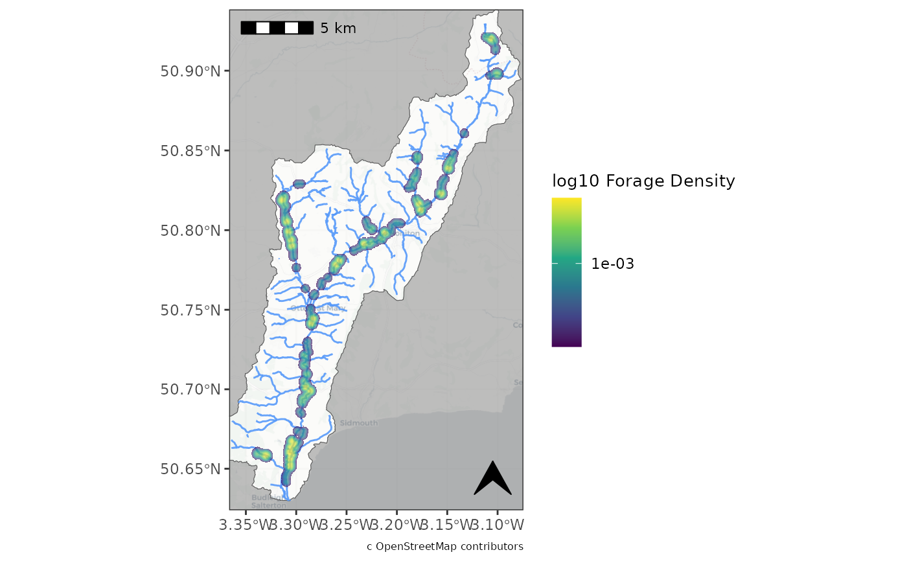

Built in plotting function for Kernel density Raster.
plot_forage_density.RdThis function provides a simple way to produce consistent maps of Kernel density plots.
Please be aware that the 'basemap', 'rivers' arguments use the following functions:
rosm::osm.image() osmdata::opq() which occasional fail during busy server times.
Usage
plot_forage_density(
kd_raster,
basemap = TRUE,
basemap_type = "cartolight",
trans_fill = TRUE,
trans_type = "log10",
axes_units = TRUE,
scalebar = TRUE,
scalebar_loc = "tl",
north_arrow = TRUE,
north_arrow_loc = "br",
north_arrow_size = 0.75,
wgs = TRUE,
guide = TRUE,
catchment = NULL,
rivers = FALSE,
plot_extent = NULL,
attribute = TRUE,
guide_width = NULL,
mask_fill = "grey50"
)Arguments
- kd_raster
Kernel Density raster generated from the
beavertools::forage_density()- basemap
Boolean, include an OSM basemap. (optional)
- basemap_type
Character vector for osm map type. for options see
rosm::osm.types()- trans_fill
Boolean to transform the colourmap - visualisation general better when TRUE (the default)
- trans_type
Character vector for the type of transform.
- axes_units
Boolean to include coordinate values on axis.
- scalebar
Boolean to include a scalebar.
- scalebar_loc
character vector for the scalebar location one of:'tl', 'bl', 'tr', 'br' Meaning "top left" etc.
- north_arrow
Boolean to include a north arrow
- north_arrow_loc
character vector for the arrow location one of:'tl', 'bl', 'tr', 'br' Meaning "top left" etc.
- north_arrow_size
numeric vector for the arrow
- wgs
Boolean to transform coordinate reference system (CRS) to WGS84 (EPSG:4326)
- guide
Boolean to include a legend
- catchment
An sf object or an sf-readable file. See sf::st_drivers() for available drivers. This feature should be a boundary such as a catchment or Area of interest. It is used to mask the map region outside of desired AOI.
- rivers
Boolean to include river lines (downloaded automatcally using the osmdata package) OR a river network of class 'sf' which can be generated beforehand using
beavertools::get_rivers().- plot_extent
'bbox', 'sf' or 'sp' object used to set the plot extent.
- attribute
Boolean to include an open street map attribution.
- guide_width
numeric vector for the width of the legend.
- mask_fill
character vector for the fill colour of the catchment mask.
Examples
# Here we filter the filter the built in 2019-2020 ROBT feeding sign data `RivOtter_FeedSigns`
# Then pipe this 'sf' object to forage_density.
ROBT_201920 <- RivOtter_FeedSigns %>%
dplyr::filter(SurveySeason == "2019 - 2020")%>%
forage_density(., 'FeedCat')
#> No value supplied for "kd_extent" argument: default extent will be used
#>
#> calculating weighted kde
# Now we plot the raster with plot_forage_density
plot_forage_density(ROBT_201920, catchment = RivOtter_Catch_Area, rivers = TRUE,
trans_fill=TRUE)
#> Warning: attribute variables are assumed to be spatially constant throughout all geometries
#> Warning: attribute variables are assumed to be spatially constant throughout all geometries
#> Zoom: 11
#> Fetching 12 missing tiles
#>
|
| | 0%
|
|====== | 8%
|
|============ | 17%
|
|================== | 25%
|
|======================= | 33%
|
|============================= | 42%
|
|=================================== | 50%
|
|========================================= | 58%
|
|=============================================== | 67%
|
|==================================================== | 75%
|
|========================================================== | 83%
|
|================================================================ | 92%
|
|======================================================================| 100%
#> ...complete!
#> Warning: Removed 1390775 rows containing missing values or values outside the scale
#> range (`geom_raster()`).
